From Concept Design to Launch: MyHiab Mobile App
Hiab is a leading provider of load-handling equipment, combining digital solutions with hydraulic lifting systems. MyHiab mobile app is designed to support operators from daily work to equipment downtime.
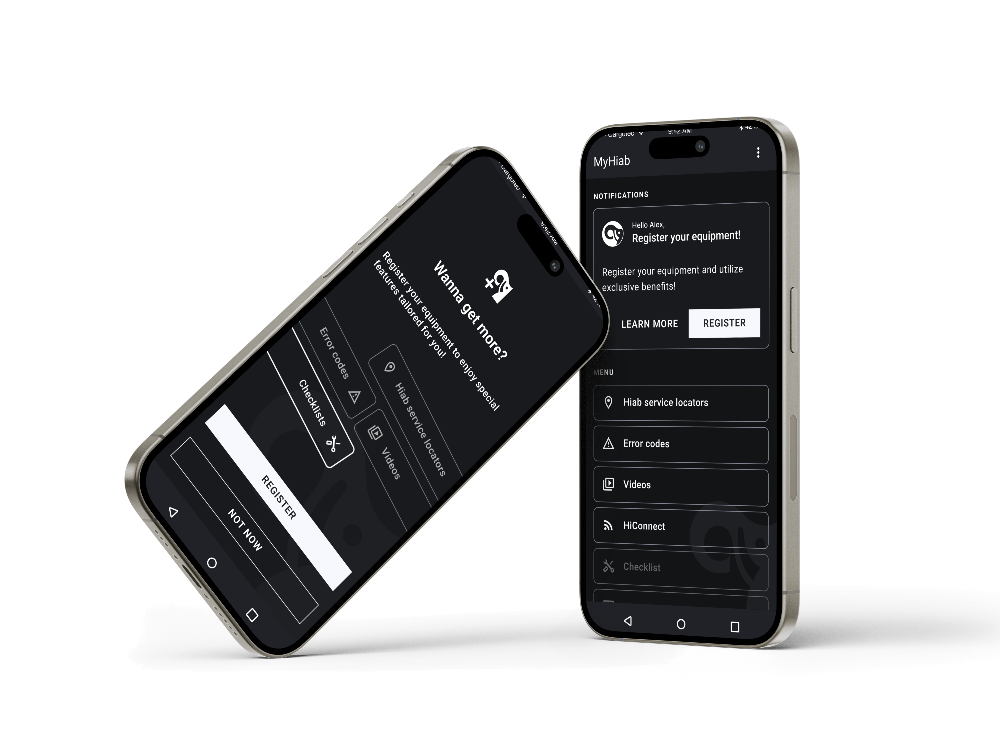
Introduction
MyHiab help equipment operators work safely and know better about their machine. The product includes features ranging from a service locator and error-code search to instructional videos and daily checklists that support users in difficult situations and accompany them in their everyday work.
My role
As a UX designer on this project, I played a key role in shaping the service concept and overall user experience.
During nearly two years on the project, I continuously improved user experiences across the app's features, balancing user needs with business priorities.
- User research, Wire framing, Prototyping, User testing
- Design system
- Concept design
Problem
Here are key problems defined from users.
- Users don't understand cryptic error codes.
When equipment has problems, it shows error codes that's not self-explanatory. Error codes can be found from equipment instruction manuals provided at the time of purchase. However, operators rarely have access to those manuals while working in the field.
Example
A construction worker started to operate hydraulic lift, but the machine doesn't move but showing a cryptic code on the screen. He doesn't know what to do and has to call the machine owner.
- Operators are commonly exposed to situational disability.
Operators are commonly exposed to situational disability, which means a temporary impairment in a person's movements, hearing, seeing, or saying due to environmental or contextual situation.
Example
Danny is an operator of a loader crane. He tries to read a text from the equipment's screen in heavy rain or sometimes direct sunlight. But his vision is impaired temporarily and can't read texts from the screen well.
- Multi-device authentication requirements make the login experience complex and burdensome.
The login experience becomes too complicated and tedious as users are required to authenticate multiple equipment and fill in extensive personal information.
Example
Tom found an interesting feature for users with registered equipment in the Hiab mobile app. However when he tried to register his equipment, he doesn't know where to find the required information and gives up on the process.
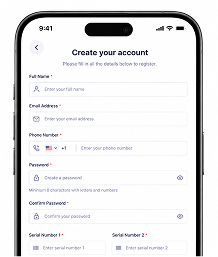
Goals
- Error codes can be found quickly from their mobile phone and guide operators to the next steps.
Through conducted user interviews, the most noticed need from users was a practical guide when their equipment shows error codes considering operators' working environment and situations.
- User experience should be accessible, intuitive and concise.
As targeted users are bound to have situational impairments, the service should be widely accessible. Also, build required steps as simple as possible to increase user engagement.
- Build a platform where Hiab can directly connect with its end users — machine operators.
Hiab aimed to provide users with the information and tools that users need while also expanding the platform into a communication channel between Hiab and machine operators.
For this reason, in addition to the highly requested error code search feature, several other functions were introduced, including service point search, video instructions, daily/monthly/yearly checklists, and annual service reminders.
- Create dark & light modes that meet AA level of Web Contents Accessibility Guides 2.2.
Operators primarily work outdoors and often face situational disability due to weather conditions or environmental factors. To help them complete their work more safely and efficiently, providing accessible services became one of Hiab's key goals.
Process
User flows and prototyping
Users' journey from various user status was mapped in detail. During this process, hidden flows were discovered and became the foundation for the prototypes.
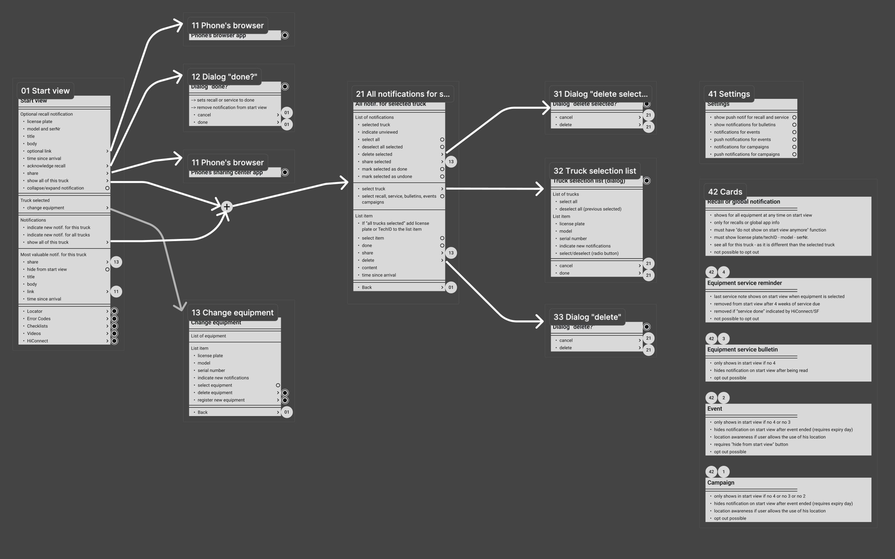
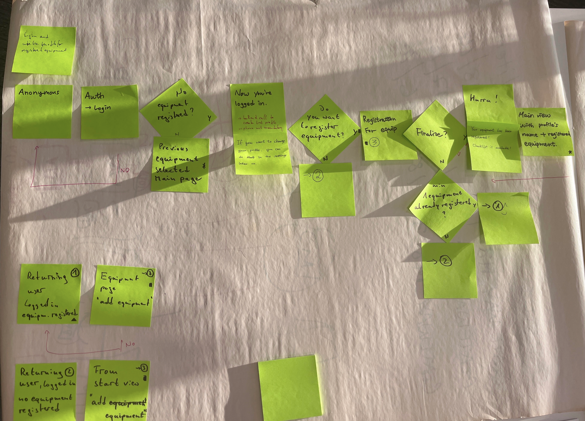
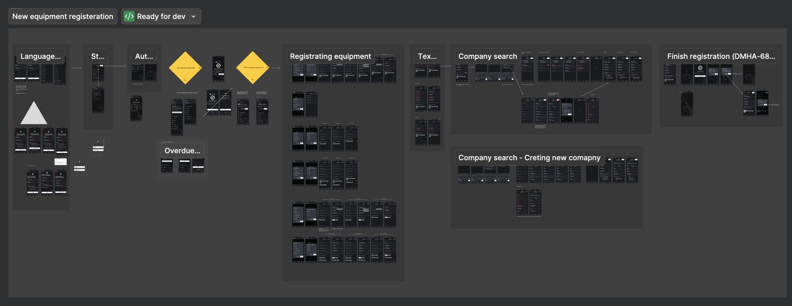
Color palette and Visual hierarchy
Careful color consideration was required in defining the color system due to the existing accent colors overlapping with the shared UI colours. Through extensive discussions and prototyping, we decided to avoid repetitive accent color usage and established UI colors that aligned more closely with the service's purpose.
In accordance with WCAG 2.2 guidelines, color alone was never used to communicate meaning; instead, it was combined with shapes and additional visual elements. All color usage principles, including these accessibility considerations, were documented in the design system.
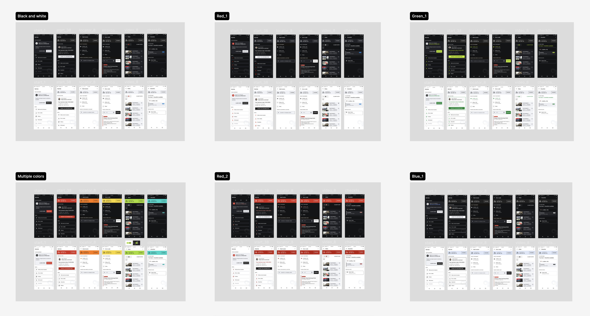
User testing and reflecting the results into the design
Several profound UX decisions were refined through user testing by incorporating feedback from test participants. One example was simplifying the login and equipment registration process through A/B testing to make the experience easier and more intuitive.
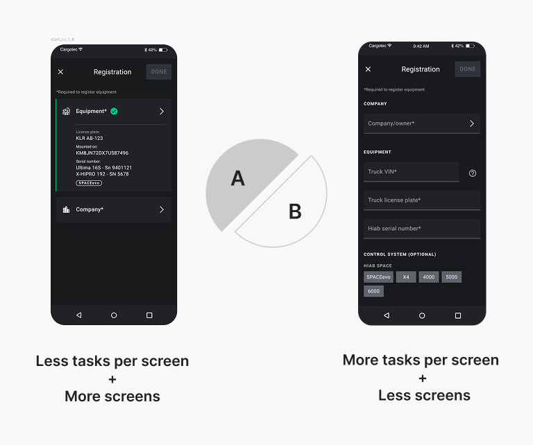
The user test was designed to explore two aspects of the user experience.
The primary goal was to understand which approach to user engagement users preferred. However, the test also revealed which approach worked better when users needed to complete multiple tasks to reach a specific goal.
We compared two approaches:
- Type A: Fewer tasks per screen, making each screen easier to understand at first glance. However, users need to navigate through more screens to complete their goal.
- Type B: More tasks per screen, making the initial view more complex. However, users can complete their goal by going through fewer screens.
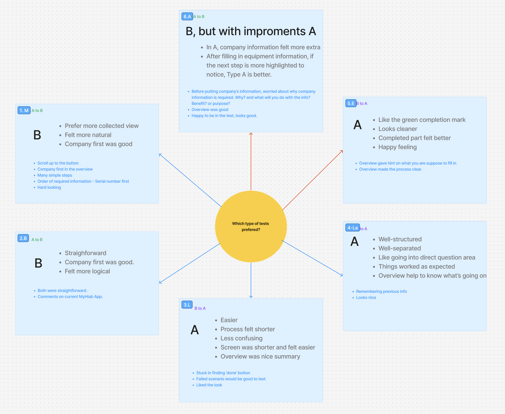
No clear winner. But a clearer direction.
The test did not produce a clear winner. Instead, 50% of participants preferred Type A, while the other 50% preferred Type B. Although there was no obvious preference that allowed us to simply choose one approach, the results gave me valuable insights into how users think about the process and what could be improved.
The participants' comments helped me identify opportunities to improve the overall engagement flow. Based on these findings, I iterated on the design by combining strengths from both approaches: keeping individual screens relatively easy to understand while reducing unnecessary steps in the overall process.
Test limitations & improvements
Due to environmental limitations, I was unable to conduct the test with the intended target users or with a sufficiently large number of participants.
Establishing a more structured usability testing pipeline and using dedicated usability testing tools or plugins could have enabled broader testing and generated more reliable insights.
Impact & result
The app was successfully launched, and the design system was widely shared.
The application was released on both the Google Play Store and Apple App Store, quickly surpassing 1,000 downloads, with approximately 10% of users completing sign-up.
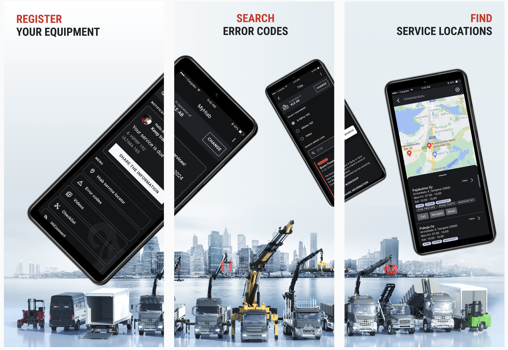
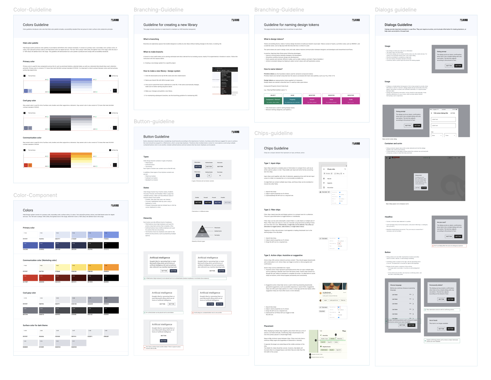
The product was developed with two accessibility-friendly modes capable of meeting WCAG 2.2 AA standards.
Creating light and dark mode enhanced accessibility for operators working outdoors especially. The implementation of dual modes was achieved by token-based design system, which streamlined the design-to-development handoff process, making collaboration faster and more efficient.
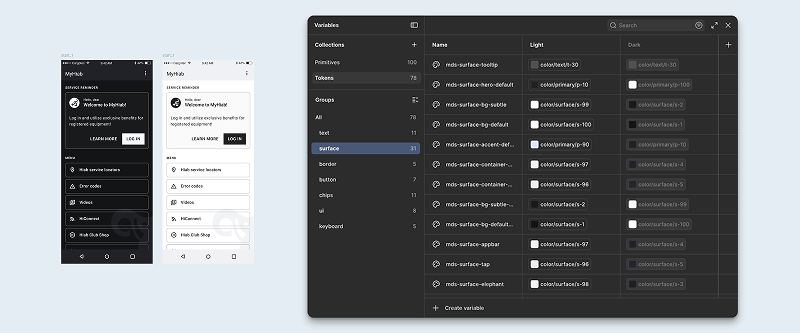
Fast & easy error code search
One of the platform's most important features was the error code search experience, designed to provide fast and reliable support directly from a user's pocket.
Because error code structures vary depending on equipment type, a filtering system was introduced that allows users to first select their machine category before searching. Additional support features — such as prefix-based filtering and visual input guidance — help users enter valid error codes more accurately while reducing search errors and frustration.
The overall experience was designed to minimise downtime and allow operators to quickly identify issues even while actively working in the field.